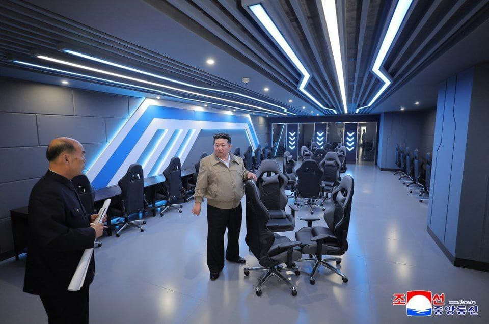

世界苦茶04月05日新闻 | 33条 | 中国对美进行大规模报复

中国对美进行大规模报复 | 特朗普再给予TikTok75天宽限期 | 多国与美国展开关税谈判 | 报特朗普拒绝所有专业建议选择最荒唐关税方案 | 以色列在加沙地面进攻升级
三个水枪手
苦茶数据
美元兑人民币：7.29（昨日7.24，前日7.31）
美元兑日元：145.53（昨日145.45，前日147.45）
上证指数：休市（昨日3342，前日3333）
标普500指数：休市（昨日5074，前日5396）
比特币：83695（昨日81790，前日83604）
布伦特原油：65.58（昨日69.34，前日73.28）
中国新闻
• 鲁比奥表示，防止格陵兰依赖中国 ：美国国务卿鲁比奥表示，美国尊重格陵兰居民的自决权，但不会允许这个资源丰富的丹麦自治领地依赖中国。法新社报道，美国总统特朗普多次表示，出于国家安全考量，他希望接管这座北极岛屿，相关言论引发丹麦政府的强烈不满。丹麦是美国长期盟友，也是北约成员国。鲁比奥星期五在布鲁塞尔参加北约外长会议后说：“丹麦应关注格陵兰人不愿留在丹麦的意愿……我们不会允许中国介入，向他们提供大量资金，从而使他们依赖中国。”
• 中国对杜邦中国立案调查 ：在美国总统特朗普宣布对中国实施对等关税隔天，中国官方宣布，对杜邦中国开展反垄断调查。中国国家市场监督管理总局星期五在官方微信公众号“市说新语”上公告，因杜邦中国集团有限公司涉嫌违反《中华人民共和国反垄断法》，市场监管总局依法对杜邦中国集团有限公司开展立案调查。公告没有提到杜邦中国的哪些业务涉嫌垄断以及具体调查内容等。
• 广东连续七年生育第一 ：中国各省份陆续公布2024年新生儿出生数据，广东省去年出生人口增了10万，至113万人，连续七年成为生育第一大省。据第一财经梳理，目前已公布数据的27个省市中，出生人口数量前三位的分别是广东、河南、山东。广东2024年出生人口113万人，出生率8.89‰，连续七年成为第一生育大省，连续五年成为唯一出生人口超100万的省份。河南省出生人口为76万2000人，比上年增加6万7000人，出生人口数量位居第二，其次是山东，去年出生人口64万9000人，出生率6.42‰，出生人口比上一年增加3万9000人。
• 中方反驳鲁比奥公路指控 ：美国国务卿鲁比奥上周批评中国在南美洲修建的公路路况糟糕，称自己几乎颠出了脑震荡。中国外交部澄清鲁比奥指的道路项目并非由中国企业承建，并不点名批评鲁比奥睁眼说瞎话。鲁比奥3月27日在与南美洲东北部国家苏里南总统单多吉举行联合记者会，表示自己刚从南美洲北部国家圭亚那回来，不得不在中国人修建的公路上行驶。他批评公路路况糟糕，称自己几乎颠出了脑震荡。在中国外交部星期四的例行记者会上，有记者问近日鲁比奥在访问加勒比期间，称中国在圭亚那建设的公路质量很糟糕，一路上差点得脑震荡，美国希望为相关国家提供替代性的选择。 （翻评：其实卢比奥批评的这条公路，根本不是中国修建的，而是当地承包商。但中资在圭亚那的项目，机场和水坝质量都很差。）
亚太印太新闻
• 台湾助理涉泄密多人被查 ：民进党籍的台湾前立法院长游锡堃办公室助理盛础缨，涉嫌泄露立法院机密给中国大陆。台湾媒体称，这起泄密案被告还有民进党前民主学院副主任邱世元、总统办公室咨议吴尚雨等人。此前盛础缨涉向中国大陆提供立法院机密资料，台北地检署近日展开侦查行动，盛础缨交保20万元新台币交保并实施电子监控。《镜周刊》报道，北地检署侦办时发现，除盛础缨外，民进党前民主学院副主任邱世元、总统府总统办公室咨议吴尚雨，以及新北市议员李余典特助黄取荣皆有涉案，目前三人遭收押。
• 尹锡悦被罢免日韩关系受挫 ：韩国前总统尹锡悦被罢免后，有分析指出，若韩国最大在野党共同民主党党首李在明当选新一任总统，日韩两国可能因历史问题和政策调整等因素再次出现紧张局面。共同社报道，日本政府正在密切关注未来60天内的大选走向及其对日韩关系的影响。日方原计划在两国邦交正常化60周年之际深化双边关系，但因尹锡悦被罢免，这一目标已难以实现。4月4日，日本首相石破茂在众院内阁委员会上强调，无论新政府如何，日韩合作对地区和平与稳定至关重要。随着朝鲜持续推进核与导弹开发，加强包括美日韩三国合作成为日韩的重要课题。
• 杜特尔特表示，一切为国家 ：菲律宾前总统杜特尔特通过长女、菲副总统莎拉·杜特尔特向媒体表示：“我所做的一切，都是为了我的国家。”据法新社报道，莎拉星期五在海牙拘留中心会见杜特尔特后告诉记者，杜特尔特希望诉讼程序能够尽快推进。他担忧自己年事已高，可能在拘押期间离世。莎拉透露：“父亲说，‘我所做的一切，都是为了我的国家。我不知道这句话是否可以被接受，但我希望全世界都能听到这番话。’”当被问及这是否等于承认国际刑事法院对其父亲的指控时，莎拉并未正面回应。
• 蔡英文缅怀李登辉 ：台湾前总统蔡英文在社交平台发文缅怀已故前总统李登辉时表示，希望台湾能冷静面对当前国际局势动荡。蔡英文星期五在脸书写道，当天是清明节，许多台民众都早起出门祭拜、缅怀故人。她前几天除了到八里和已故台独大佬史明说说话，也到五指山向前总统李登辉致敬。她说，前总统李登辉在卸任后，依然关心台湾的发展，透过出访、写作和演讲，希望和全体台民众一起“走出一条属于台湾自己的道路”。
• 尹锡悦肖像从韩军中撤下 ：韩国宪法法院星期五裁定罢免时任总统尹锡悦后，韩军指挥官办公室、会议室等悬挂的尹锡悦肖像随即被撤下。此外，总统府也降下办公楼外象征总统权力的“凤凰旗”。综合韩国媒体报道，根据国防部颁布的《部队管理训令》，须在总统肖像受损或任期届满时更换肖像，且应由相关部队首长负责粉碎或焚毁处理。韩国防部发言人已确认，军方将严格按照训令执行，并向下属单位发布相关公文。
• 朝鲜，金正恩携女儿4月3日视察平壤和盛新城三期工程的配套服务设施，包括一座300席电脑游戏馆： 负责人汇报说，这家电脑游戏馆将备置各种游戏设备，开馆就会深受广大青少年青睐，金正恩表示满意。他指出，专门提供电脑游戏服务的这个新空间是朝鲜首办的服务领域基地，要特别关心运营体系、秩序以及服务准备工作。
科技新闻
• 美国总统特朗普再次给予TikTok“不卖就禁”法律75天宽限期，以便政府有更多时间来促成交易： 知情人士透露，白宫认为他们即将达成协议，将TikTok业务分拆成一家总部位于美国的新公司，由大多数美国投资者拥有并运营，字节跳动仅保持少数股权。然而知情人士称，字节跳动的代表已致电白宫，表示中国在贸易和关税进行谈判前不会批准TikTok的交易。字节跳动发言人称，该公司一直在与美国政府讨论潜在解决方案，但协议尚未执行，且任何协议都须根据中国法律获得批准。 （翻评：Soft and Beta as F….and unlawful. 根本就违法。）
• 联合国警告称AI可能影响全球40%工作岗位： 联合国贸易和发展会议周四发布报告称，预计到2033年 AI 的市场规模将达到4.8万亿美元，但这项技术也会带来一些问题。人工智能的市值大致相当于德国的经济规模。该技术能够提高生产率，并正成为数字转型中的一股重要力量。然而，该机构也对自动化以及由此导致的岗位流失表示担忧，警告称人工智能可能会影响全球40%的工作岗位。此外，报告还指出，AI本质上并不具有广泛的普惠性，这意味着这项技术带来的经济收益仍然“高度集中”。
财经新闻
• 越南愿意将美国产品关税减至 0% 以换取美国减免关税的双边协议： 越南总书记苏林周五与美国总统特朗普通电话时表示，越南愿意与美国进行谈判，将美国对越南出口的关税降至 0%，并要求美国对越南对美国的出口也采取同样的措施。苏林还表示，越南寻求增加从美国的进口，并将鼓励和为美国企业进一步在越南投资创造有利条件。两位领导人还同意继续进行讨论，以便尽快签署两国协议，正式确定上述承诺。同时，苏林邀请特朗普总统尽早访问越南，特朗普接受邀请并表示希望尽快与苏林总书记举行会晤。
• 台湾880亿援助产业应对关税 ：美国特朗普政府向台湾征收32%对等关税，台湾政府出台协助产业方案，拨款880亿新台币。据台湾《上报》报道，台行政院星期五开记者会说明相关措施。行政院长卓荣泰说，为应对这次关税冲击，事前已与科技业、传统产业，甚至在海外布局的业者进行沟通，由于美国政策仍有不确定因素，政府会持续管控风险，了解产业需求，让经济稳定。
• 西班牙推141亿欧元援助计划 ：西班牙首相佩德罗·桑切斯宣布一项价值141亿欧元的援助计划，以保护可能受到美国关税新政冲击的经济。桑切斯星期四在首相府发表讲话，强调计划是为减轻美国贸易战的负面影响，成为“保护我们经济的盾牌”。据透露，这一计划将包括74亿欧元的新融资，以及现有可筹措的67亿欧元资金。桑切斯对美国关税新政表示遗憾，并称这“对欧洲、世界和西班牙来说都是糟糕的消息”。新华社引述他说：“不管是欧洲还是西班牙，无人能在这一冲击下幸免。”他同时指出，欧盟对从美国进口产品征收的关税仅为3％，与美方声称的39％并不一致，并表明欧盟将团结一致，作出恰当的回应。
• 石破茂称美关税是国家危机 ：日本首相石破茂指出，美国总统特朗普对日本商品征收的关税是“国家危机”。法新社引述石破茂星期五在议会的讲话说，美国对日本进口商品征收24％的关税“可说是国家危机，政府正在与各方尽最大努力应对”。《朝日新闻》引述未具名的高级官员报道，日本将起草经济措施，以帮助企业和家庭抵御美国关税的影响，并着眼于编制额外预算为其提供资金。
• 石破茂希望直接对话特朗普 ：日本首相石破茂说，倾向以直接对话方式与美国总统特朗普沟通关税问题，并称日方正积极推动安排双方通话。综合路透社与共同社消息，石破茂于星期五在朝野党首会谈上，谈及美国提出的对等关税时说，如有必要，将以适当方式直接向特朗普总统表达日方立场，明确流露出希望进行直接沟通的意向。针对美国政府宣布征收24%对等关税，石破茂表达严重关切，并强调“今后也将强烈要求调整这项措施”。
• 欧洲股市大跌创近两年新低 ：美国总统特朗普宣布对等关税后，欧洲股市遭遇重挫，本周跌幅创下2022年6月以来新高。路透社报道，斯托克欧洲600指数在星期五格林尼治标准时间早上7时10分下跌0.9%，本周累计下跌4.4%，为2022年6月以来最差表现。美国将对60多个对美贸易顺差显著的经济体加征更高的关税，包括最主要的贸易伙伴如欧盟，引发市场对欧洲经济前景的担忧。投资者预期欧洲央行可能降息以刺激经济。
• 全球领导人寻求关税减让 ：美国总统特朗普祭出一个世纪以来最严厉的关税措施，促使各国领导人寻求与华盛顿达成降低关税的协议。然而，关税谈判的空间可能比预期更小。特朗普的对等关税政策要求所有贸易伙伴必须承担至少10%的基线税率。尽管有数十个国家因对美巨额贸易顺差而面临更高的税率，但特朗普及其顾问们强调，10%的基线税率对于防止贸易欺诈至关重要。关税措施已经引发全球市场大跌。美国官员对于总统的谈判意愿传递出相互矛盾的信息，这令试图达成关税减让的外国领导人和企业高管更加困惑。
• 林岱桦提议萧美琴应对关税 ：美国总统特朗普宣布对各经济体实施对等关税，其中对台湾加征税率为32%后，执政民进党立委林岱桦提议，总统赖清德任命副总统萧美琴担任台美关税因应对策小组召集人。林岱桦星期五在脸书发文，形容特朗普全球关税战是国安层级议题，并吁请赖清德任命萧美琴担任台美关税因应对策小组召集人，提升政府应变层级，安定企业及民心。林岱桦认为，萧美琴长年深耕华府政界，是少数熟知美国政治逻辑、能即时掌握态势的政治领袖，由萧美琴担任对策小组总指挥官，相信具备高度说服力与信赖度。
• 美3月就业数据超预期 ：美国3月非农就业岗位增长显著超出预期，但特朗普总统实施的关税政策或对未来几个月的就业市场构成挑战，尤其是在企业信心疲软、股市震荡的情况下。路透社报道，美国劳工部星期五公布的就业报告显示，3月非农就业岗位增加了22.8万个，高于市场预期的13.5万个，也远超2月经下调后的11.7万增幅。分析师的预测范围在5万到18.5万之间。与此同时，失业率从2月的4.1%略升至4.2%。尽管如此，低裁员率为就业市场提供了有力支撑，稳定的工资增长也助力经济扩张持续进行。
• 中国宣布多项对美反制措施 ：针对美国特朗普政府的对等关税，中国官方星期五宣布一系列反制措施。这些措施包括：对原产于美国的所有进口商品，在现行适用关税税率基础上加征34%关税；暂停一家美国企业高粱输华资质，三家美国企业禽肉骨粉输华资质，并暂停两家美国企业禽肉产品输华；将斯凯迪奥公司等11家美国实体，列入不可靠实体清单；将高点航空技术公司等16家美国实体，列入出口管制管控名单；对原产于美国、印度的进口相关医用CT球管发起反倾销立案调查；对钐、钆、铽、镝、镥、钪、钇等七类中重稀土相关物项实施出口管制措施；在世贸组织争端解决机制发起起诉；对美国化工巨头杜邦中国集团有限公司开展反垄断立案调查。
• 安华召开特别会讨论关税 ：马来西亚首相安华说，他将在星期五下午召集多位政府高级官员进行一场特别会议，重点讨论美国对马来西亚征收24%对等关税一事。《东方日报》报道，安华坦言，美国实施的对等关税确实对马国造成一定影响，但税率仍低于美国对邻国所征收的水平。安华在加影参加星期五聚礼后向媒体说：“今天下午，我将主持关于美国对等关税的特别会议。我已要求所有相关部长、国家银行以及哈山马力肯一同参与。会后我们会发布一项声明。”
• 美团试点骑手养老补贴 ：中国平台公司美团宣布，为骑手补贴养老保险，星期四起开始在福建泉州、江苏南通两城区试点。美团表示，试点方案为，对当月收入达到就业地相关缴费基数下限，且近六个月有三个月满足该条件的骑手，美团以相关缴费基数为基准，补贴50%的费用。例如，泉州市灵活就业人员参加养老保险的最低月缴费基数为4433元人民币，按缴费比例20%计算金额为886.6元，骑手可获得443.3元的美团现金补贴。
• 油价下跌创近三年最大跌幅 ：美国宣布加征关税，以及石油输出国组织及其盟友决定加快增产步伐后，油价进一步下跌，创下2022年以来最严重的跌势。彭博社指出，美国西得克萨斯中质油跌破每桶67美元，布伦特原油则跌至接近70美元。在美国总统特朗普大举加征关税，让全球经济前景增添阴影的数个小时后，OPEC+宣布将今年5月的增产幅度，提高至原定计划的三倍。与会代表称，上述增产之举，旨在惩罚违规超产、刻意压低油价的成员。这两项消息在油市掀起震荡，然而对于长期抱怨油价过高的特朗普而言，可能反倒是一桩好事。
• 法德促欧盟强硬反击美关税 ：法国和德国正在推动对美国总统特朗普的关税措施做出更强有力的回应，主张采取有力的报复措施，以强化欧洲联盟的谈判地位。据熟悉其想法的人士称，法国总统马克龙认为，欧盟应该准备好，采用例如打击美国科技和服务产业的选项。虽然法国希望达成谈判解决方案，但也在推动更为强硬的回应方式。彭博社引述其中一名不愿透露姓名的知情人士说，巴黎希望确保，欧盟动用一切手段来捍卫自身利益。
• 中国互联网企业利润下滑 ：中国互联网企业今年1月和2月的盈利下降6.2%。据中国工业和信息化部星期四披露数据，今年前两月中国互联网业务营收下滑，规模以上互联网和相关服务企业完成互联网业务营收2321亿元人民币，同比下降0.5%，盈利193亿4000万元，同比下降6.2%。投入研发经费124亿5000万元，同比增长2.8%，增速与2024年全年持平。中国工信部表示，首两月互联网业务营收有所下滑，利润总额降幅收窄，研发经费投入保持平稳增长，部分地区增势良好。
• 特朗普亲选关税计算方式 ：知情人士称，尽管数周以来包括商务部、贸易代表等多个美政府机构研究如何实施特朗普的“对等关税”要求，并呈上了一系列决策选项清单，但特朗普本人亲自挑选了被经济学家普遍嘲笑的“对美顺差/对美出口”计算方式。该计算方式的具体作者不明确，但与在第一、第二任特朗普政府中均任职的贸易顾问纳瓦罗出版过的方法非常类似。相关政策辩论持续至1日夜间，特朗普直到正式宣布前三小时才最终拍板。一名熟悉特朗普想法的白宫官员称，特朗普对外界负面影响已彻底“无所谓(not giving a fuck)”，更在乎兑现自己关于关税的竞选承诺。迟至上周，资深共和党议员仍不清楚关税计划的打击面；宣布当日受邀前往白宫的议员一样不清楚计划详情。各行业团体与商界领袖数周来一直在与特朗普内阁接触沟通，有知情人士表示其过程相当有挑战性，因“不知道哪个特朗普政府的官员在负责沟通”，怀疑“政府内部没协调一致”“部门机构之间不通气”。宣布后，大多数各行业CEO都被关税计划的规模震惊，甚至远超出其中一部分人的最坏假设。
俄乌战争
• 普京暂无与特朗普通话计划 ：继俄罗斯总统普京的投资事务特使访问华盛顿后，克里姆林宫星期五说，普京与美国总统特朗普目前暂无再次进行电话通话计划。美国全国广播公司引述知情人士称，特朗普的核心幕僚建议他，在普京承诺全面停火之前，应避免再次与其通话。普京此前表明，莫斯科原则上并不排除停火可能，但前提是乌方需满足一系列关键条件。
• 俄袭乌致多人死伤 ：俄罗斯4月3日晚些时候袭击乌克兰哈尔科夫，造成5人死亡、32人受伤。乌克兰其他3个居民区也遭到俄罗斯袭击。俄罗斯国防部表示，其防空系统摧毁了百余架乌克兰无人机。乌克兰政府和西方军事分析家认为，俄军正准备在未来几周发动新的军事攻势，以最大限度对乌克兰施加压力，加强俄罗斯在停火谈判中的地位。乌克兰外长4月4日在北约会议上表示，必须让俄罗斯认真对待和平。英法外长指出，俄罗斯在利用谈判拖延时间。美国国务卿鲁比奥表示，很快将知道俄罗斯在谈判中的真实意图。本周访美的俄罗斯特使则称，对话需要时间，指责媒体和政客试图破坏俄美关系。
其他新闻
• 以军加沙地面行动升级 ：以色列国防军说，星期五在加沙地带北部的舒加艾耶地区开展地面军事行动，以扩大“安全区”。新华社报道，以色列国防军星期五发布声明说，以军在行动中击毙多名武装人员，并摧毁了巴勒斯坦伊斯兰抵抗运动用于策划和发动袭击的一个指挥控制中心。以色列国防军发言人戴弗林星期四在新闻发布会上说，以军对加沙地带的军事行动已进入“新阶段”。戴弗林说，以军自3月18日恢复在加沙地带的军事行动以来已发动600多次袭击，打死250多人。
• 消息人士称，美国国税局4月4日开始裁员，计划解雇2万名员工，约占该机构员工总数的25%： 裁员将从国税局民权与合规办公室开始，该办公室将裁员75%，其余员工则将被吸纳进首席顾问办公室。美国国税局负责征收税收并执行税法。财政部发言人表示，裁员是流程改进和技术创新的一部分，将使国税局能够更有效地运作。但税务官员担心，裁员将增加逃税机会，大幅降低政府税收。
• 特朗普推500万美元黄金卡 ：美国总统特朗普展示全球首张“黄金卡”，这款金灿灿的卡片要价500万美元，持卡者等同获得美国居留许可。法新社报道，特朗普星期四在空军一号上向记者展示了这张“黄金卡”。卡片上印有他的头像，并标注“特朗普”字样。他说，这款特殊签证预计将在“两周内”正式推出。特朗普说：“我是第一个买家，挺令人兴奋吧。”